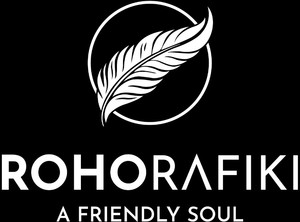

Trade Mark Journal No.2025/010 7 March 2025
UK00004160727 15 February 2025 (25,35)

- Class 25
- Baseball caps and hats; Dresses; Dressing gowns; Halter tops; Hooded bathrobes; Hooded pullovers; Hooded sweat shirts; Hooded sweatshirts; Hooded tops; Hoodies; Hoods; Hoods [clothing]; Jackets; Jerseys; Jerseys [clothing]; Jogging bottoms; Jogging bottoms [clothing]; Jogging outfits; Jogging pants; Jogging sets [clothing]; Jogging tops; Jumper dresses; Jumpers; Jumpers [pullovers]; Jumpers [sweaters]; Knit tops; Knitted clothing; Ladies' clothing; Ladies' dresses; Leggings [leg warmers]; Leggings [trousers]; Long jackets; Long sleeve pullovers; Long sleeved vests; Long-sleeved shirts; Lounge pants; Men's and women's jackets, coats, trousers, vests; Men's clothing; Nightshirts; Nightdresses; Nightgowns; Nighties; Nightshirts; Nightwear; Pedal pushers; Pinafore dresses; Pinafores; Play suits; Playsuits [clothing]; Polo knit tops; Polo neck jumpers; Polo shirts; Polo sweaters; Pullovers; Pyjamas; Rainproof jackets; Shawls; Shell jackets; Shirts; Short trousers; Shorts; Shorts [clothing]; Short-sleeve shirts; Short-sleeved shirts; Short-sleeved T-shirts; Shoulder wraps[clothing]; Sleepwear; Sleeved jackets; Sleeveless jackets; Sleeveless jerseys; Sleeveless pullovers; Socks; Sundresses; Sweaters; Sweatpants; Sweatshirts; Sweatshorts; Tank tops; Tank-tops; Tee-shirts; Tops; Tops [clothing]; T-shirts; T-shirt dresses; Turtleneck pullovers; Turtleneck shirts; Turtleneck sweaters; Turtleneck tops; Turtlenecks; Undergarments; Underpants; Vest tops; Vests; V-neck sweaters; Waterproof jackets; Water-resistant clothing; Wind-resistant jackets; Women's clothing; Yoga bottoms; Yoga pants; Yoga shirts; Yoga socks; Yoga tops; Knitwear [clothing]; Jackets [clothing]; Ready-to-wear clothing; .
- Class 35
- Online retail services relating to clothing; Online retail store services in relation to clothing; Retail services connected with the sale of clothing and clothing accessories; Retail services in relation to clothing. .
ROHO RAFIKI LIMITED